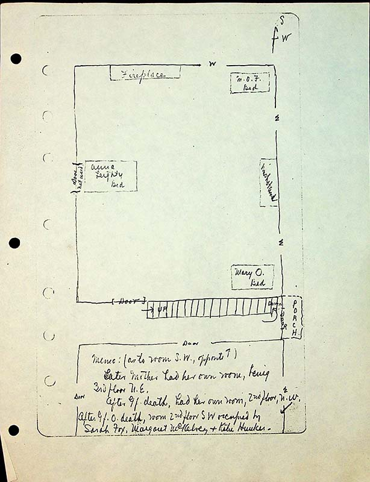

Memo: (as to room SW opposite)
Later Mother had he brown room, 2nd floor N.W after Mother] had he brown room, 2nd floor N.W after GFOdeath, room 2nd floor SW occupied by Sarah Fox, Margaret McKelvy & Katie Hunker